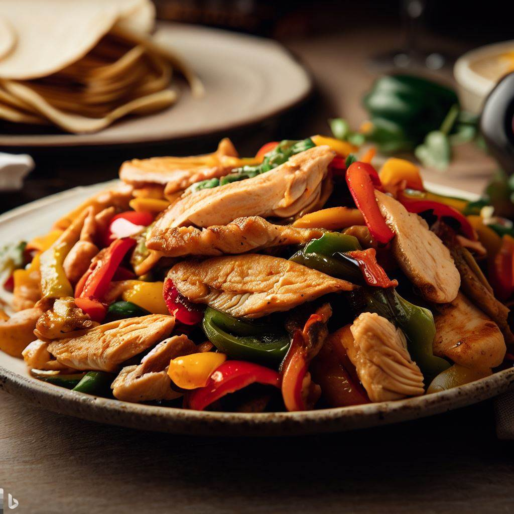

My Fajitas

My chicken fajitas have easy dump it and cook steps but produce great results.
Ingredients
- 2lbs Chicken Breast
- 2 Green Peppers
- 2 Red Peppers
- 2 Yellow Peppers
- 1 Medium Onion
- 1 Can Diced Tomatoes
- 2 Limes
- 1 Packet Fajita Seasoning
- Sour Cream
- Tortillas
Directions
- Chop all peppers & onion.
- Put chicken breasts in a crockpot & put peppers and onions on top.
- Drain can of diced tomatoes & add to crockpot.
- Mix in fajita seasoning to taste.
- Cut open limes and squeeze lime juice over top everything.
- Cook on low for 8hrs or high for 4hrs.
- Enjoy with tortillas!
Mom's Spaghetti
Mom's Tacos
Poor Man's Casserole